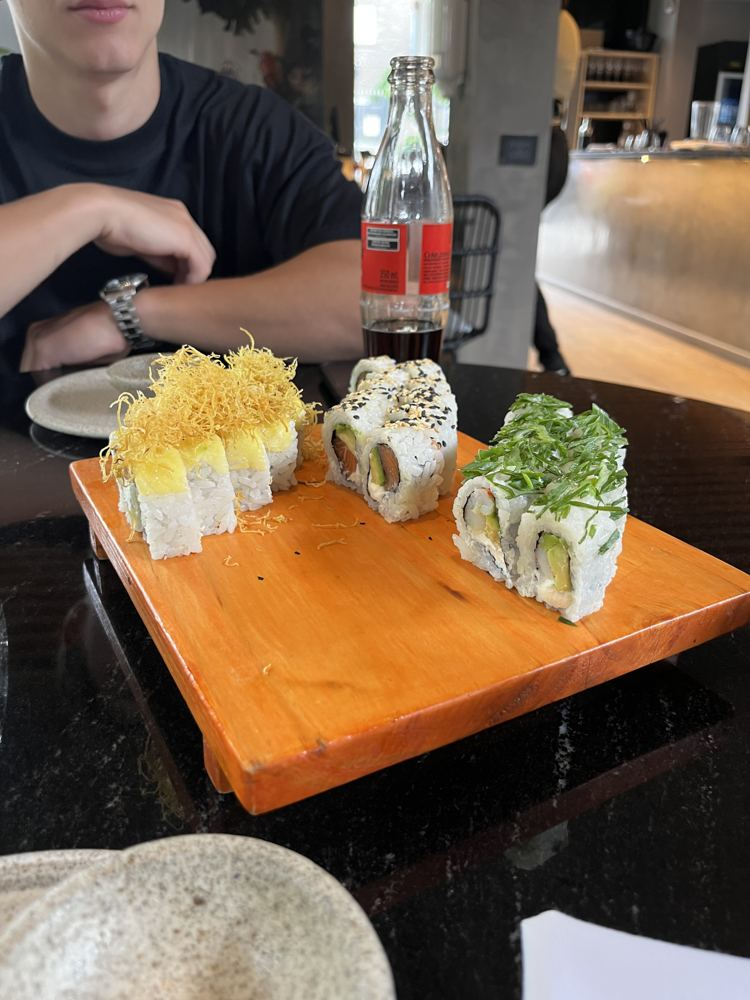

Fabric Sushi
Fabric Sushi es la parada de sushi contemporáneo del recorrido. Sus rolls se sirven en tablas de madera, con coberturas y combinaciones de sabores pensadas para compartir en la mesa.
¿Por qué visitarlo?
Es ideal si querés probar sabores orientales en un ambiente moderno y con platos muy cuidados en su presentación.
Ubicación: Av. Pedro Goyena 100, Caballito (CABA)
Horarios y medios de pago: Se confirman al reservar el recorrido
Redes: Instagram